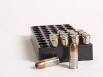

To survive a zombie outbreak water is essential. Water is needed to survive even while not in a zombie filled world.
There are many resources that are needed in surviving the end of the world because of a zombie outbreak.
| Water: | Food:
ParaFood is needed as well to survive, you want to get food that will last a long time. Such as canned goods and peanut butter. |
Shelter: You need to find a place to stay, a sturdy place with sold concrete walls will be the best. Stores are ideal because of the concrete walls and the gates to lock up the shops in some areas. |  Weapons:
You will eventually need to venture out into the new zombie filled world. And you will need to fight them off. Melee weapons are good because they do not run out of ammo, although guns are good because of their range and rapid killing potential. Weapons:
You will eventually need to venture out into the new zombie filled world. And you will need to fight them off. Melee weapons are good because they do not run out of ammo, although guns are good because of their range and rapid killing potential. |
 Ammo: Guns take ammunition and guns only hold so much ammo. So you will want to stock up on ammo so you can survive longer. | Car/truck: You will need a means of transportation, when you start running low on resources you need to go find some more. And you need a fast and safer way to reach new supplies. | Plan: Finally and most importantly you need a plan. You need to know where you can find food and other resources, and the way you are going to reach the new resources. |
Links to Helpful sites
A quick video for you
Here are just some useful and simple tips, now its up to you.
NOW SURIVE THE APOLYPISE!